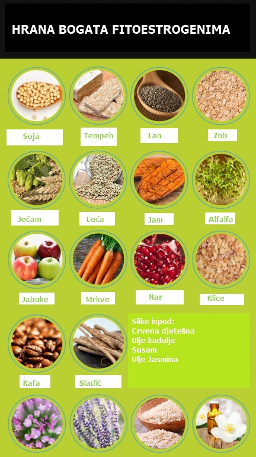
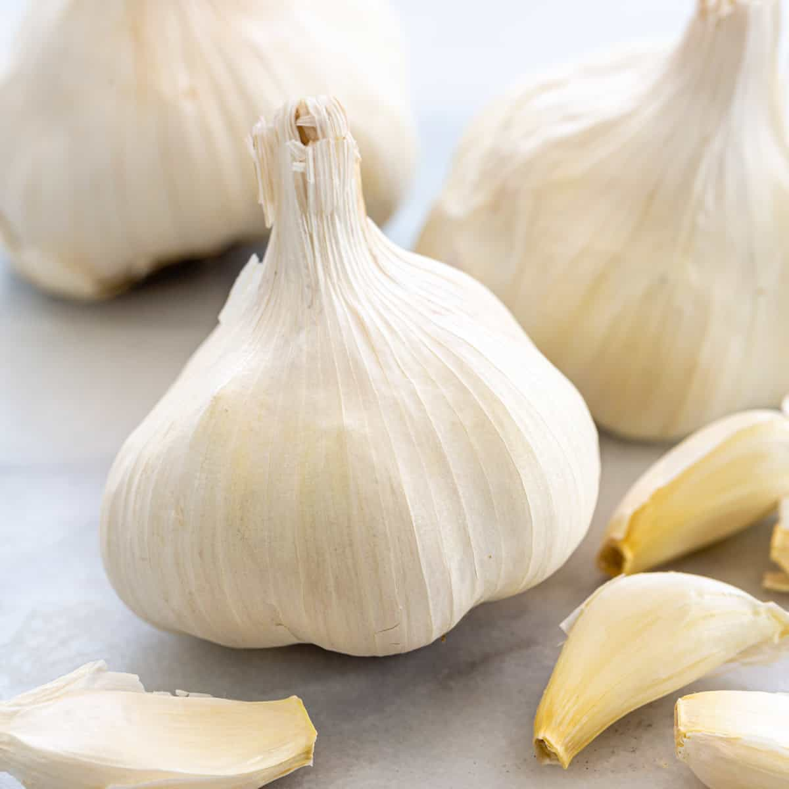
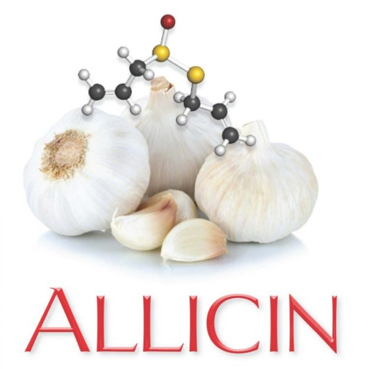

Ukoliko se makar rekreativno bavimo sportom, i ako tome dodamo i ljetni period godine,
rezultat svega je veliki gubitak tjelesne tečnosti, što je neophodno nadoknaditi, a za šta
se preporučuje povećan unos vode. ... Ukoliko treniramo,
tečnost treba da uzimamo neposredno prije,
tokom i nakon aktivnosti, svakih 10 do 15 minuta (idealno je da joj temperatura bude oko 10 do 12
stepeni C). Postoji više preporuka o izboru vode za piće, a za naše podneblje čini se da je posebno
važna ona koja se odnosi na izbor vode s ciljem smanjenja rizika od hipertenzije, ima li se u vidu
činjenica da veliki dio populacije pati od visokog pritiska. Preporučuje se da sve osobe smanje sadržaj
natrijuma (kuhinjske soli) u hrani i napicima koje konzumiraju. Posebno su korisne niskomineralne vode,
koje sadrže manje od 20 miligrama natrijuma po litru.
OČISTITE LIMFU - OJAČAJTE IMUNITET
LIJEKOVI IZ KUHINJESirovo voće i povrće
Imunitet, April 11, 2021
Nema kuhanje, nema kalorija - brzo, lako i zdravo! Sirovu hranu bi trebalo jesti na prazan stomak kako
bi učinak bio bolji i limfi omogućio dubinsko čišćenje ćelija.
Među namirnicama koje su dobre za limfu nalaze se:
citrusi i ostala kisela voća, luk (posebno bijeli, dodajte ga uvijek salatama s krastavcem), đumbir, nar, avokado,
gorka hrana poput rotkvice i kelja, orašasti plodovi (sirovi orasi, bademi i lješnici), sjemenke suncokreta,
sjemenke bundeve. Citrusi
U citruse ili argume spadaju limun, grejpfrut,
pomorandže i mandarine. Citrusi obiluju vitaminom C i pektinom.
Pektin je tip vlakana koji se nalaze u biljkama. Povoljno utiče na razgradnju masnih naslaga, izvrstan je
upijač masti, smanjuje apsorpciju holesterola iz hrane i pospješuje rad debelog crijeva. Sok od citrusa,
bez dodatka šećera, pospješuje diurezu (mokrenje), djeluje osvježavajuće i jača organizam svojim antiupalnim
dejstvom. Da bi se iscjedio više soka, plod bi trebao prije cijeđenja staviti da odstoji nekoliko minuta u toploj vodi.
Bijeli luk
Poznat je po svojim antimikrobnim, antivirusnim i antiupalnim svojstvima. On je i prirodni antibiotik. Možete ga
koristiti u liječenju natečenih limfnih čvorova. Izgnječite i pojedite dva-tri čehna bijelog luka svakog dana dok
natečeni limfni čvorovi ne nestanu. Možete maskirati njegov opojni miris tako što ćete ga pomiješati s krastavcem,
kiselim mlijekom i limunom i time dobiti jednu osvježavajuću salatu. Đumbir
Stari indijski iscjelitelji koristili su ovaj ljekoviti začin za čišćenje crijeva. Oko njih je koncentrisan veliki broj
limfnih sudova i čvorova, te oslobađanjem od otrova ovog dijela probavnog trakta praktično se detoksikuje i limfni sistem.
Đumbir možete konzumirati u kombinaciji s medom, citrusima ili kao dodatak jelima. Nar
Polifenoli, antioksidansi iz sočnih crvenih sjemenki ovog voća štite ćelije na molekularnom nivou od razornog
djelovanja slobodnih radikala. Nar sadrži više antioksidanasa od brusnice i narandže, a jedan plod ima tri puta
veći antioksidativni potencijal od crnog vina i zelenog čaja. Bogat je vitaminima (C, B, K i E) i mineralima (kalijum i
magnezijum). Zajedno sa bobičastim voćem i mangom nalazi se u grupi koju nutricionisti često nazivaju supervoće.
Ukoliko vam je zdrava limfa prioritet, obavezno konzumirajte najmanje 2 dl napitka od nara tokom dana. Otporan je
na štetočine pa ne zahtjeva veliko tretiranje pesticidima, tako da nije neophodno kupovati onaj ekološki uzgojen.
Sezona mu je od oktobra do januara, te ga je najbolje konzumirati u tom periodu. Brusnice
Svježe cijeđen sok od brusnice, bez šećera, prepun je enzima, vitamina C i sastojaka koji ojačavaju rad limfnog sistema.
Preporučuje se po pola čaše soka od brusnice ujutru i uveče. Sok nikako ne treba kuhati jer se tako gube zdravi sastojci!
ŠTA SAVJETUJU SPECIJALISTI Čišćenje limfnog sistema postiže se i: Vježbanjem - brojne studije pokazuju da je skakanje najdjelotvorniji način za poboljšanje limfne cirkulacije.
Veliki značaj se pripisuje i jogi, posebno položaju svijeće. Ovakvim položajem se, zahvaljujući gravitaciji, poboljšava
protok limfe i tijelo se efikasno oslobađa otpadnih produkata. Zdravom ishranom-jedite što više voća i povrća koje sadrži veliku količinu prirodnih kiselina i enzima, kao i
antioksidanasa. Poseban značaj u prečišćavanju limfe pridaje se sokovima od citrusa, zelenom lisnatom povrću, đumbiru i
orašastim plodovima. Hidratacijom - 95% limfe čini voda. Dnevno morate popiti najmanje šest do osam čaša filtrirane vode, koja je još
djelotvornija u kombinaciji s limunom. Hidroterapijom - jedna od veoma korisnih metoda za poboljšanje venske i limfne cirkulacije je naizmjenično tuširanje
toplom i hladnom vodom.
LJEKOVITE BILJKE PROTIV ASTME
Simptome ovog poremećaja moguće je kontrolisati promjenom ishrane i životnog stila, medikamentima ali i pomoću
biljnih preparata
Ljekovito bilje, April 11, 2021
Tačan uzrok astme nije poznat, ali je utvrđeno da određeni faktori - genetika, postojeće alergijsko stanje, gojaznost i
prekomjerno pušenje - mogu povećati šanse za razvoj bolesti. Uobičajeni simptomi astme su karakteristično "zviždanje"
(naročito pri izdisanju), kašalj, kratak dah, stezanje u grudima i otežano disanje. Mogu biti umjereni, ali i veoma
intenzivni, čak opasni po život. Simptome ovog poremećaja moguće je kontrolisati promjenom ishrane i životnog stila,
medikamentima, ali i pomoću biljnih preparata. Origano
Origano se zbog svojih antiupalnih i antibakterijskih svojstava od davnina koristi u liječenju mnogih bolesti.
Sadrži ruzmarinsku kiselinu, karvakrol, flavonoide i terpene - supstance koje efikasno čiste pluća, smanjuju upalu
respiratornog trakta i bronhijalnih cijevi te ublažavaju simptome astme. Osobe koje pate od ove bolesti treba da piju
dvije do tri šolje čaja od origana, koji se pravi jednostavno: tri kašičice svježe ili sušene biljke preliti šoljom
vrele vode, ostaviti da stoji pet do 10 minuta, procijediti i po želji zasladiti medom. Sladić
Slatki korijen ili sladić već se vijekovim upotrebljava za liječenje oboljenje respiratornog trakta. Također je efikasan
u tretmanima astme jer djeluje antiinflamatorno, ublažava upalu bronhijalnih cijevi, čisti disajne puteve i olakšava disanje.
Pored toga, ova biljka se dolikuje i imonostimulativnim osobinama. Napomena: sladić je veoma jak biljni lijek i treba ga
koristiti pažljivo jer može izazvati glavobolju i porast krvnog pritiska. Ne smiju ga uzimati dijabetičari, hipertoničari
kao ni osobe koje imaju problema s nadbubrežnom žlijezdom, jetrom i bubrezima. Kopriva
Čajevi i drugi preparati od koprive veoma su djelotvorni u liječenju alergijske astme. Ta moćna biljka sadrži prirodne
antihistaminike i djeluje protivupalno, te pomaže otvaranju bronhijalnih i nazalnih puteva ublažavajući simptome astme.
Sem toga, u njen sastav ulazi i buterna kiselina - važna za održavanje zdravlja imunološkog sistema i metabolizma.
da bi olakšali tegobe koje prate ovu bolest, oboljeli od astme treba nekoliko puta na dan da piju čaj od koprive koji se
pravi na sljedeći način: kašik suhog korijena ili lišće preliti šoljom vrele vode, poklopiti, ostaviti da stoji pet minuta
i zasladiti medom.
RIJEŠITE SE BOLA U KOLJENIMA
Koljena, April 12, 2021

1. Preduprijedite tegobe mlijekom
Samo jedna šolja mlijeka dnevno može da smanji rizik od nastanka bola u koljenima za 50%, pokazalo je
istraživanje, čiji su rezultati objavljeni u magazinu "Clinical and Experimental Rheumatology". Kako je objašnjeno,
zahvaljujući mješavini kalcijuma, joda i vitamina B12, mlijeko jača hrskavicu koljena i smanjuje osjetljivost ovog zgloba
bolje od svih mliječnih proizvoda. Ipak, ako niste ljubitelj svježeg mlijeka, možete imati koristi i od konzumacije
mladih sireva, pogotovo onih napravljenih od kozjeg mlijeka. U njima, također, ima dosta ovih nutrijenata, koji jačaju
hrskavicu.
2. Sanirajte upalu bosvelijom
Indijska biljka, od čije se smole dobija tamjan, dokazano pozitivno djeluje na zdravlje svih zglobova u tijelu, a naročito
koljena. Analizirajući tokom pet različitih studija, stručnjaci su utvrdili da bosvelija ispoljava snažno antiinflamatorno
dejstvo, zahvaljujući čemu sanira upalu koljena i poboljšava njihovu fleskibilnost. Za neutraliziranje postojećih i
predupređivanje novih bolova u koljenima, stručnjaci savjetuju da se uzima od 600 do 1.200 miligrama ekstrakta ove biljke dnevno -
- u vidu kapsula. 3. Usporite trošenje zglobne tečnosti fitoestrogenima
Fitoestrogeni usporavaju trošenje tkiva i zglobne tečnosti u koljenima, pa, zahvaljujući tome, znatno doprinosi
ublažavanju postojećih, ali i spriječavanju novih, tegoba u ovoj regiji tijela. Pored toga, poboljšavaju cirkulaciju
i omogućava bolju ishranu tkiva. 4. Sačuvajte hrskavicu šargarepom
Prema rezultatima studije, koji su publikovani u časopisu "American Journal of Clinical Nutrition", dovoljno je da pojedete
pola šolje šargarepe ili nekog drugog narandžastog povrća ili voća da biste poboljšali fleksibilnost koljena.
Narandžaste namirnice u sebi sadrže pigment beta-kriptoksantin koji zaustavlja trošenje hrskavice i potpomaže obnovu
ovog vezivnog tkiva. 5. Pobijedite osteoartritis borovnicama
Ove ukusne bobice sadrže elaginsku kiselinu koja suzbija degenerativne promjene zglobova. Američki istraživači tvrde
da su one toliko efikasne u borbi protiv osteoartritisa koljena da je dovoljno pojesti tri šolje svježih ili zamrznutih
borovnica na nedjeljnom nivou, kako bi se smanjio rizik od ovog oboljenja za 18%, a potojeći bol u koljenu za 52%.
Osim u suzbijanju degenerativnih promjena, zahvaljujući visokom sadržaju vitamina K i magenezijuma, borovnice su efikasne
i u obavljanju hrskavice. Prva pomoć
Ako vas bol drži budnim dugo u noć, sipajte kapi eteričnog ulja lavande u losion za tijelo i time masirajte bolno područje.
Rezultati jednog evropskog istraživanja pokazali su da ova mirisna biljka aktivira alfa moždane talase koji blokiraju bol,
zbog čega ublažava neprijatni osjećaj u roku od pet minuta, a u isto vrijeme uspavljuje.
BIJELI LUK
Bijeli luk, April 12, 2021

Koristi češnjaka zauzimaju tek drugo mjesto nakon koristi od kurkume po količini istraživanja
koja podupiru ovu superhranu. U vrijeme objavljivanja ovog članka, postoji više od 6.100
recenziranih članaka koji su ocjenjivali sposobnost začina da spriječi i poboljša širok spektar bolesti.
A znate li šta je sve ovo istraživanje otkrilo?
Redovno jedenje bijelog luka nije samo dobro za nas - ono je povezano sa smanjenjem ili čak
pomaganjem u prevenciji četiri glavna uzroka smrti širom svijeta, uključujući bolesti srca, moždani udar, rak i infekcije.
Nacionalni institut za rak ne preporučuje nijedan dodatak prehrani za prevenciju raka, ali
prepoznaje začin kao jedno od nekoliko povrća s potencijalnim antikancerogenim svojstvima.
Osim najekstremnijih, rijetkih situacija, svaka osoba na planeti treba da konzumira ovaj začin.
Izuzetno je isplativ, super se uzgaja i apsolutno je fantastičnog okusa.
Nutrijenti-
Češnjak sadrži nebrojene vitalne hranjive sastojke - flavonoide, oligosaharide, aminokiseline,
alicin i visoku razinu sumpora (samo da nabrojimo neke) - a redovno jedenje ovog začina dokazano pruža
nevjerojatne zdravstvene beneficije.
Sirovi češnjak također sadrži približno 0,1 posto esencijalnog ulja od kojih glavne komponente uključuju
allyl propyl disulfide, diallyl disulfide i diallyl trisulfide.
Otprilike tri grama hranjivog sastojka od bijelog luka sadrži oko:
4,5 kalorija
1 gram ugljenih hidrata
0,2 grama proteina
Vlakno od 0,1 grama
0,1 miligram mangana (3 posto DV)
0,9 miligrama vitamina C (2 posto DV)
5,4 miligrama kalcijuma (1 posto DV)
0,4 mikrograma selena (1 posto DV)
Ovo su samo neki od glavnih hranjivih sastojaka koji se nalaze u ovom začinu.
Sadrži i aliin i alicin, koji su oboje sumporni spojevi koji promoviraju zdravlje. Koristi od
alicina posebno su dobro istražene u studijama.
Naučnike zanima potencijal ovih spojeva sumpora izvedenih iz začina za prevenciju i liječenje
kroničnih i smrtonosnih bolesti, poput raka i kardiovaskularnih bolesti, između ostalih blagodati bijelog luka.
7 blagodati sirovog češnjaka
Kao što ćete uskoro vidjeti, koristi od sirovog češnjaka su brojne. Može se koristiti kao efikasan
oblik biljnog lijeka na mnogo načina, uključujući sljedeće. 1. Bolesti srca
Prema Centrima za kontrolu i prevenciju bolesti, bolesti srca su ubojice broj 1 u Sjedinjenim Državama,
a slijedi ih rak. Ovaj začin je široko prepoznat kao preventivno sredstvo i kao liječenje mnogih
kardiovaskularnih i metaboličkih bolesti, uključujući aterosklerozu, hiperlipidemiju, trombozu, hipertenziju i dijabetes.
Naučni pregled eksperimentalnih i kliničkih studija blagodati bijelog luka pokazao je da, sveukupno,
konzumacija ovog začina ima značajne kardioprotektivne učinke i u istraživanjima na životinjama i na ljudima.
Vjerovatno je najnevjerovatnija karakteristika to što se pokazalo da pomaže u preokretanju ranih srčanih
bolesti uklanjanjem nakupina plaka u arterijama.
Randomizirana, dvostruko slijepa studija 2016. objavljena u Journal of Nutrition uključila je 55 pacijenata,
starih od 40 do 75 godina, kojima je dijagnosticiran metabolički sindrom. Rezultati studije pokazali su da
ostarjeli ekstrakt bijelog luka efikasno smanjuje plak u koronarnim arterijama (arterije koje dovode krv u srce)
kod pacijenata sa metaboličkim sindromom.
Jedan od vodećih istraživača, Matthew J. Budoff, MD, rekao je:
„Ova studija je još jedna demonstracija blagodati ovog dodatka u smanjenju nakupljanja mekih naslaga i
sprečavanju stvaranja novih naslaga u arterijama, što može uzrokovati bolesti srca. Završili smo četiri
randomizirane studije, a oni su nas doveli do zaključka da ekstrakt ostarjelog češnjaka može pomoći usporiti
napredovanje ateroskleroze i preokrenuti ranu fazu srčanih bolesti. " 2. Rak
Vjeruje se da povrće alijuma, posebno bijeli luk i luk, i njihovi bioaktivni sumporni spojevi djeluju u svakoj
fazi nastanka raka i utječu na mnoge biološke procese koji modificiraju rizik od raka, navodi se u pregledu
objavljenom u Cancer Prevention Research.
Riječima Nacionalnog instituta za zdravstvo Nacionalnog instituta za rak:
Nekoliko populacijskih studija pokazuje povezanost između povećanog unosa bijelog luka i smanjenog rizika od
određenih karcinoma, uključujući karcinom želuca, debelog crijeva, jednjaka, gušterače i dojke.
Kada je riječ o tome kako konzumiranje ovog začina djeluje u prevenciji raka, Nacionalni institut za rak objašnjava:
… Zaštitni učinci češnjaka mogu proizaći iz njegovih antibakterijskih svojstava ili iz njegove sposobnosti
da blokira stvaranje supstanci koje uzrokuju rak, zaustavljaju aktivaciju supstanci koje uzrokuju rak,
poboljšavaju obnavljanje DNK, smanjuju proliferaciju ćelija ili izazivaju staničnu smrt.
Francuska studija na 345 pacijenata sa rakom dojke otkrila je da je povećana potrošnja bijelog luka, luka i
vlakana povezana sa statistički značajnim smanjenjem rizika od raka dojke.
Još jedan rak za koji je začin posebno pokazao da pozitivno utječe je rak gušterače, jedan od najsmrtonosnijih oblika.
Dobra vijest je da znanstvena istraživanja pokazuju da povećana konzumacija bijelog luka može smanjiti rizik od razvoja raka gušterače.
Istraživanje zasnovano na populaciji provedeno na području zaljeva San Francisco pokazalo je da je rizik od
raka gušterače za 54 posto manji kod ljudi koji su jeli veće količine bijelog luka i luka u odnosu na one
koji su jeli manje količine. Studija je takođe pokazala da povećanje ukupnog unosa povrća i voća može
zaštititi od razvoja karcinoma gušterače.
Ovaj popularni začin takođe pokazuje obećanja kada je u pitanju liječenje raka. Utvrđeno je da njegovi
organosumporni spojevi indukuju zaustavljanje
ćelijskog ciklusa kada se dodaju ćelijama karcinoma tokom in vitro eksperimenata.
Sve u svemu, ovaj začin jasno pokazuje neki stvarni potencijal kao hrana koja se bori protiv raka, a koja se
ne smije zanemariti ili popustiti. 3. Visok krvni pritisak
Zanimljiv je fenomen da se pokazalo da ova uobičajena biljka pomaže u kontroli visokog krvnog pritiska.
Jedno istraživanje je proučavalo efekt ostarjelog ekstrakta bijelog luka kao pomoćni tretman za ljude koji
već uzimaju antihipertenzivne lijekove, a opet imaju nekontroliranu hipertenziju.
Studija objavljena u naučnom časopisu Maturitas procijenila je 50 ljudi s "nekontroliranim" krvnim pritiskom.
Otkriveno je da je jednostavno uzimanje četiri kapsule ostarjelog ekstrakta bijelog luka (960 miligrama) dnevno
tokom tri mjeseca uzrokovalo pad krvnog pritiska u prosjeku za 10 bodova.
Drugo istraživanje objavljeno 2014. godine pokazalo je da začin ima "potencijal za snižavanje BP kod osoba s
hipertenzijom slično standardnim lijekovima za BP".
Ova studija dalje objašnjava da polisulfidi začina potiču otvaranje ili širenje krvnih žila, a time i smanjenje krvnog pritiska. 4. Prehlada i infekcije
Eksperimenti su pokazali da je bijeli luk (ili specifična hemijska jedinjenja poput alicina koja se
nalazi u začinu) vrlo efikasan u ubijanju bezbroj mikroorganizama odgovornih za neke od najčešćih
i najrjeđih infekcija, uključujući prehladu. Zapravo može pomoći u prevenciji prehlade, kao i drugih infekcija.
U jednoj studiji, ljudi su uzimali dodatke bijelog luka ili placebo 12 nedelja tokom hladne sezone
(između novembra i februara). Oni koji su dodali začin imali su manju vjerovatnoću da će prehladiti,
a ako su se prehladili, oporavili su se brže od placebo grupe.
Grupa koja je primala placebo imala je mnogo veću vjerovatnoću da će zaraziti više od jedne prehlade
tokom 12-tjednog perioda liječenja.
Studija pripisuje sposobnost začina da spriječava prehladu svojoj zvjezdanoj biološki aktivnoj komponenti, alicinu.
Njegova antimikrobna, antivirusna i antifungalna svojstva mogu pomoći u ublažavanju prehlade kao i drugih infekcija.
Smatra se da posebno alicin igra važnu ulogu u antimikrobnim moćima ovog povrća. 5. Muški i ženski gubitak kose (alopecija)
Kliničko ispitivanje provedeno je kako bi se ispitalo ono što je istraživanje pokazalo da je rastuća praksa
u Turskoj: korištenje bijelog luka za liječenje ćelavosti. Istraživači Univerziteta medicinskih nauka
Mazandaran iz Irana testirali su kako gel od bijelog luka koji se nanosi na kožu glave dva puta dnevno tokom
tri mjeseca može utjecati na ljude koji uzimaju kortikosteroide zbog alopecije.
Alopecija je česta autoimuna bolest kože, koja uzrokuje gubitak kose na vlasištu, licu, a ponekad i na
drugim dijelovima tijela. Trenutno su dostupni različiti tretmani, ali još nije poznat nijedan lijek.
Istraživači su otkrili da je upotreba gela značajno dodala terapijsku efikasnost lokalnog kortikosteroida
u liječenju alopecije areata. Iako ga studija nije direktno testirala, primjena kokosovog ulja infuziranog
bijelim lukom kao samostalni tretman možda bi čak bila korisnija kao lijek protiv gubitka kose jer ublažava
rizik od apsorpcije štetnih kortikosteroida u koži. 6. Alzheimerova bolest i demencija
Alzheimerova bolest je oblik demencije koja ljudima može oduzeti sposobnost jasnog razmišljanja,
obavljanja svakodnevnih zadataka i, u konačnici, sjetiti se tko su uopće. Ovaj začin sadrži antioksidante
koji mogu podržati tjelesne zaštitne mehanizme protiv oksidativnog oštećenja koje može doprinijeti ovim kognitivnim bolestima.
Kada je riječ o pacijentima s Alzheimerovom bolešću, β-amiloidni peptidni plakovi obično se opažaju u
središnjem živčanom sustavu, a ti naslage naslaga rezultiraju stvaranjem reaktivnih vrsta kiseonika i
oštećenja neurona (ćelije u nervnom sistemu).
Studija objavljena u Journal of Neurochemistry otkrila je „značajna neuroprotektivna i neurorecuelačka
svojstva“ ostarjelog ekstrakta bijelog luka i njegovog aktivnog jedinjenja S-alil-L-cistein (SAC).
Istraživači zaključuju iz svojih nalaza da ostarjeli ekstrakt zajedno sa SAC-om može se koristiti
za razvoj budućih lijekova za liječenje Alzheimerove bolesti. 7. Dijabetes
Pokazalo se da jedenje ovog popularnog začina pomaže u regulaciji nivoa šećera u krvi, potencijalno
zaustavljanju ili smanjenju efekata nekih komplikacija dijabetesa, kao i u borbi protiv infekcija,
smanjenju LDL holesterola i podstiče cirkulaciju.
Istraživanje dijabetičkih pacova pokazalo je da ovaj začin može biti od velike pomoći u poboljšanju
ukupnog zdravlja dijabetičara, uključujući ublažavanje uobičajenih dijabetičkih komplikacija poput
ateroskleroze i nefropatije. Ovi pacovi, koji su svakodnevno dobivali ekstrakt sirovog bijelog luka,
imali su značajno nižu razinu glukoze u serumu (razinu šećera u krvi), holesterola i triglicerida.
U poređenju sa kontrolnom grupom, pacovi koji su dobivali sirovi beli luk imali su 57 posto manje
serumske glukoze, 40 posto niži nivo serumskog holesterola i 35 posto niže trigliceride.
Pored toga, nivo proteina u urinu kod štakora tretiranih začinima bio je 50 posto niži.
Drugo istraživanje je takođe pokazalo da je kod pacijenata sa dijabetesom tipa II bijeli luk
značajno poboljšao nivo holesterola u krvi. Konkretno, njegova konzumacija smanjila je ukupni
holesterol i LDL (loši) holesterol i umjereno povisila HDL holesterol u odnosu na placebo.
Sjeckani ili mljeveni češnjak aktivira enzime aliinaze u ćelijama začina, a sjedenje omogućava tim
enzimima da pretvore dio allina klinčića u alicin. Alicin se zatim brzo razgrađuje i stvara razna jedinjenja sumpora.
Naučnici predlažu da češnjak odstoji 10 minuta nakon usitnjavanja ili drobljenja prije nego što ga skuha.
Za mljevenje češnjaka ogulite kožu, odvojite klinčiće i zdrobite ih ravnom stranom velikog noža. Za kožu i infekcije
Drugi način upotrebe bijelog luka je za infekcije. Korišćenje ulja biljke češnjak izvrstan je
prirodni lijek za mnoge vrste infekcija, uključujući infekcije uha i kože.
Tradicionalne kulture koje se obično ne bore s ovim vrstama bolesti dobivaju to redovno u prehrani.
Za mršavljenje
Ova biljka pomaže pojačati vaš metabolizam, što može podržati gubitak kilograma. Dodavanje sirovog ili
kuhanog bijelog luka zdravim i dobro uravnoteženim obrocima svaki dan može pospješiti gubitak kilograma.
Uz ovu biljnu korist, može pomoći i seksualno. Budući da alicin pospješuje protok krvi u reproduktivnim
organima i potiče cirkulaciju, možda ćete primijetiti da dodavanje ovog začina vašoj prehrani poboljšava vaše seksualno zdravlje.
Doziranje
Za opću promociju zdravlja odraslih, Svjetska zdravstvena organizacija preporučuje dnevnu dozu jednog od sljedećeg:
- dva do pet grama (oko jedan režanj) svježeg bijelog luka (može biti sirovi, pirjani ili pečeni bijeli luk)
- 0,4 do 1,2 grama sušenog bijelog luka u prahu
- dva do pet miligrama ulja bijelog luka
- 300 do 1.000 miligrama ekstrakta bijelog luka
- druge formulacije koje su jednake dva do pet miligrama alicina
Češnjak je najbolje čuvati na sobnoj temperaturi i uvijek ga treba održavati suhim (da ne bi nikao).
Rizici i nuspojave
Može li jedenje sirovog belog luka biti štetno?
Kada se uzima na usta, sirovi češnjak može izazvati peckanje u ustima ili želucu, loš zadah,
žgaravicu, plinove, nadutost, mučninu, povraćanje, tjelesni miris i proljev.
Verovatnoća ovih neželjenih efekata raste s povećanjem količine konzumirane.
Općenito, bijeli luk u bilo kojem obliku može povećati rizik od krvarenja, jer djeluje
kao prirodno sredstvo za razrjeđivanje krvi. Razgovarajte sa svojim liječnikom prije
konzumiranja sirovog bijelog luka ako uzimate sredstva za razrjeđivanje krvi.
Zbog zabrinutosti zbog krvarenja, prestanite uzimati začin najmanje dvije sedmice
prije bilo kakve planirane operacije.
Tijekom trudnoće i dojenja vjeruje se da je ovaj začin siguran u količinama hrane,
ali u ljekovitim količinama može biti nesiguran.
Kad se uzima na usta u odgovarajućim malim količinama u kraćim vremenskim periodima,
kaže se da je to sigurno za djecu. Međutim, nikada se ne smije davati djeci u velikim dozama.
Ako imate bilo kakvih gastrointestinalnih problema, važno je znati da sirovi češnjak
može iritirati GI trakt. Ljudi sa čirima ovaj bi začin trebali izbjegavati sirovi.
Da biste izbjegli pojačana GI problema, nemojte jesti sirovi češnjak na prazan želudac.
Ako se direktno nanese na kožu, može izazvati ozbiljnu iritaciju kože sličnu opekotinama,
pa budite oprezni u kontaktu s kožom.
Razgovarajte sa svojim liječnikom prije konzumiranja sirovog bijelog luka ako imate nizak
krvni tlak, čireve ili druge probleme sa želučanim sistemima, probleme sa štitnjačom
ili bilo koje druge zdravstvene probleme.
Neke od najdubljih blagodati sirovog bijelog luka koje je nauka dokazala uključuju
pomaganje u preokretanju srčanih bolesti u ranim fazama, prevenciju i borbu protiv
različitih oblika raka, poboljšanje zdravlja dijabetičara, pa čak i obećanja za ozbiljne
kognitivne bolesti poput Alzheimerove bolesti.
Da biste maksimalno iskoristili njegove aktivne sastojke, najbolje je da ga konzumirate
sirovog ili ga zdrobite / izrežete i ostavite malo (10 minuta) prije nego što ga dodate u svoje kuhane recepte.
Karanfilić uz obrok svaki dan je sjajan, jednostavan način da počnete ubirati blagodati sastojaka.
BIJELI LUK, ALLICIN
Allicin, April 11, 2021

Šta je alicin?
Alicin je definiran kao organsko sumporno jedinjenje koje se dobija iz bijelog luka. Karanfilić
bijelog luka (Allium sativum), vrsta iz porodice biljaka Alliaceae, zapravo proizvodi više alicina
putem enzimskih reakcija kada je biljka napadnuta ili povrijeđena.
Ovaj spoj nastaje nakon što enzim aliinaza pretvori aliin u alicin.
Suplementi alicina preciznije se nazivaju "tabletama od bijelog luka", jer sadrže brojne aktivne sastojke.
Alicin je odgovoran za miris i okus češnjaka.
Smatra se da su spojevi koje stvara alicin vrlo hlapljivi. Oni odaju sumporovodik, iz razloga što su tako oštri.
Kako se alicin vadi iz češnjaka? Prečišćeni alicin se zapravo ne prodaje komercijalno, jer nije vrlo stabilan.
Što se tiče njegove bioraspoloživosti, alicin se smatra „nestabilnim“ spojem, jer je prisutan samo u svježem,
nezagrijanom češnjaku koji je izrezan ili zgnječen, ali nije skuhan. Njegov se kemijski sastav brzo mijenja
nakon što se izvadi i potroši dok ulazi u gastrointestinalni trakt, plus ima vrlo "uvredljiv miris",
što znači da bi ga malo ljudi bilo spremno unijeti.
Postoje dvije glavne klase organskih sumpornih jedinjenja koja se nalaze u cijelim karanfilićima bijelog luka:
L-cistein sulfoksidi i γ-glutamil-L-cistein peptidi.
Alicin se razgrađuje stvarajući mnoštvo organskih sumpornih jedinjenja koja su povezana sa zaštitnim efektima.
Tu spadaju dialil trisulfid (DATS), dialil disulfid (DADS) i dialil sulfid (DAS).
Dialil trisulfad je stabilniji od alicina, pa se koristi u suplementima i lijekovima u svrhe kao što je
liječenje bakterijskih, gljivičnih i parazitskih infekcija.
Prema web mjestu Phytochemicals, češnjak sadrži mnoštvo sumpornih spojeva i fitokemikalija,
a tri najvažnija su aliin, metin i S-alilcistein. Pokazalo se da ovi zajedno imaju terapeutske učinke,
uključujući antibakterijsko, antifungalno, hipolipidemijsko, antioksidativno, antikancerogeno i još mnogo toga.
Sada je dostupno nekoliko različitih vrsta dodataka bijelom luku. Nivoi organskih sumpornih jedinjenja
koje ovi suplementi pružaju ovise o načinu na koji su proizvedeni.
Budući da ima širok spektar bioloških aktivnosti i razgrađuje se da bi stvorio druga jedinjenja sumpora, alicin uključuje:
- Borba protiv infekcija zbog svoje antimikrobne aktivnosti
- Zaštita zdravlja srca, na primjer zbog njegovih učinaka na snižavanje holesterola i krvnog pritiska
- Potencijalno pomaže u zaštiti od stvaranja raka
- Zaštita mozga od oksidativnog stresa
- Zaštita od insekata i mikroorganizama
- Najbolji način za dobivanje alicina je jesti svježi češnjak koji je zgnječen ili narezan na kriške.
- Svježi, nekuvani češnjak treba zgnječiti, narezati ili sažvakati kako bi se povećala proizvodnja alicina.
Pokazano je da zagrijavanje češnjaka smanjuje njegovo antioksidativno, antibakterijsko i vaskularno zaštitno
djelovanje, jer mijenja hemijski sastav sumpornih spojeva. Neka su istraživanja otkrila da je tokom
jedne minute u mikrotalasnoj ili 45 minuta u pećnici izgubljena značajna količina, uključujući gotovo
sve antikancerogene aktivnosti.
Češnjak u mikrovalovima se ne preporučuje. Međutim, ako kuhate bijeli luk, najbolje je da karanfilić
ostane čitav i da ga pečete, mljevate, kiselite, pečete na roštilju ili prokuhavate kako biste zadržali hranjive sastojke.
Pustiti zgnječeni bijeli luk da odstoji 10 minuta pre nego što se skuha može pomoći u povećanju nivoa
i neke biološke aktivnosti. Međutim, diskutabilno je koliko dobro ovaj spoj može izdržati svoje putovanje
kroz gastrointestinalni trakt kada se jednom pojede.
Postoji li još koja hrana alicina osim bijelog luka? Da, ima ga i u ishrani luka i drugim vrstama iz
porodice Alliaceae, u manjoj mjeri. Međutim, bijeli luk je jedini izvor.
Iako ima mnoštvo karakteristika koje promoviraju zdravlje, studije nisu pronašle da crni bijeli luk daje
veće količine alicina od ostalih vrsta bijelog luka. Međutim, jedenje svih vrsta bijelog luka i dalje je
korisno i ohrabruje se, jer se brojne blagodati bijelog luka šire i od alicina - poput pružanja flavonoida,
steroidnih saponina, organoselenijumskih spojeva i alliksina.
Zdravstvene dobrobiti 1. Poseduje antioksidativnu aktivnost
Istraživanja su pokazala da alicin ima antioksidativna svojstva koja mogu pomoći u značajnom
smanjenju oksidativnog stresa. To znači da može pomoći u zaštiti od ćelijskih oštećenja,
oštećenja mozga i mnogih drugih starosnih stanja.
2. Podržava kardiovaskularno zdravlje
Koje su prednosti alicina za zdravlje srca? Sveukupno, naučne studije dale su oprečne rezultate.
Iako su brojna istraživanja otkrila da pilule od bijelog luka mogu imati svojstva snižavanja
holesterola, druga nisu pronašla takve učinke.
Vjeruje se da način na koji se priprema bijeli luk i način vađenja alicina i drugih spojeva
to može objasniti. S druge strane, S-alilcistein je bioraspoloživ i ima sposobnost snižavanja holesterola,
jer djeluje kao antioksidans i protuupalno sredstvo.
S tim u vezi, postoje neki dokazi da dodaci alicina i bijelog luka mogu imati hipolipidemijske,
antitrombocitne i prokrvotočne učinke. Oni mogu pomoći u poboljšanju kardiovaskularne funkcije
snižavanjem krvnog pritiska, zaštitom od ateroskleroze (otvrdnjavanje arterija) i smanjenjem upale,
modifikacijom lipoproteina i unošenjem LDL „lošeg holesterola“.
Metaanaliza iz 2013. godine pokazala je da su pripravci od bijelog luka značajno snizili ukupni
holesterol i lipoprotein niske gustine (LDL) -holesterola u odnosu na placebo kod odraslih
sa povišenim holesterolom. 3. Ima prirodno antibakterijsko dejstvo
Može li alicin ubiti bakterije? Postoje dokazi da ova fitokemikalija može inhibirati bakterije,
viruse i rast kvasca, poput kandide.
Studija iz 2014. objavljena u časopisu Molecules navodi: „alicin može inhibirati proliferaciju i
bakterija i gljivica, ili potpuno uništavati ćelije, uključujući sojeve otporne na antibiotike
poput Staphylococcus aureus, rezistentnog na meticilin“ (MRSA).
Antimikrobni učinak alicina posljedica je njegove reakcije s različitim enzimima, uključujući tiolne skupine.
Neka istraživanja pokazuju da se može koristiti za promicanje zacjeljivanja čira i borbu protiv različitih patogena,
kao što su Helicobacter pylori, S. aureaus, E. coli i drugi.
Iako su neke žene izvijestile o korištenju karanfila bijelog luka za interno liječenje vaginalnih infekcija kvascem,
većina OBGYN-a ili pružatelja zdravstvenih usluga to ne preporučuje. 4. Demonstrira antikancerogene i kemopreventivne aktivnosti
Studije in vitro pokazale su da je ekstrakt alicina sposoban da indukuje ćelijsku smrt i inhibira
proliferaciju kancerogenih ćelija. Utvrđeno je da se bori protiv invazije i metastaza u ćelijama
karcinoma debelog crijeva čovjeka.
Prema nekim studijama, redovno jedenje bijelog luka povezano je sa smanjenim rizikom od raka prostate,
debelog crijeva i želuca, ali nije jasno koliku ulogu alicin može igrati. Zbog niske stabilnosti i
slabe bioraspoloživosti, potrebno je više istraživanja kako bi se utvrdilo kako čisti alicin može
biti korišten u prevenciji ili liječenju raka.
Rizici i nuspojave
Koji su nuspojave alicina? Dodaci češnjaku uglavnom su sigurni i dobro se podnose, ali neki su nuspojave i dalje mogući.
Najčešća pritužba nakon uzimanja tableta ili ulja od bijelog luka je pojačani dah i tjelesni miris.
Neki imaju i gastrointestinalne simptome, kao što su žgaravica, bol u trbuhu, podrigivanje, mučnina,
povraćanje, nadimanje, zatvor i proljev.
Da biste spriječili nuspojave, najbolje je uzimati dodatke bijelog luka s hranom.
Veće doze (2.400–7.200 miligrama ekstrakta belog luka) mogu u interakciji s lijekovima, uključujući Varfarin,
međutim umjerene doze sigurno je kombinirati s većinom lijekova.
U rijetkim slučajevima došlo je do nekontroliranog krvarenja, što je ozbiljno stanje koje zahtijeva hitnu pažnju.
Češnjak može kod nekih ljudi izazvati alergijske reakcije i pogoršati simptome astme i simptome
kontaktnog dermatitisa. Reakcije na dodatke belog luka najverovatnije su ako je neko alergičan na sam bijeli luk.
Vrste dodataka
Stručnjaci smatraju da je minimalna efektivna doza sirovog češnjaka jedan karanfilić, koji se
jede dva ili tri puta dnevno tokom obroka.
Konzumacija sirovog bijelog luka ne bi trebala prelaziti 25 grama dnevno, što bi moglo biti toksično.
To je približno 6 velikih karanfilića belog luka.
Čisti dodaci ili ekstrakti alicina ne prodaju se komercijalno, već dodaci bijelom luku.
Sadrže veću raznolikost jedinjenja.
Dostupne su različite vrste dodataka bijelog luka, uključujući:
dehidrirani bijeli luk u prahu
ulje od bijelog luka
macerat bijelog luka
ostarjeli ekstrakt bijelog luka
Još uvijek nije potpuno jasno kako djeluje apsorpcija i metabolizam alicina i spojeva izvedenih
iz alicina, ali studije pokazuju da suplementi bijelog luka mogu biti korisni u razne svrhe,
vjerojatno zbog interakcije različitih fitonutrijenata koji se nalaze u bijelom luku.
Ekstrakt ostarjelog češnjaka jedini je dodatak češnjaka na bazi vode koji ga čini
bioraspoloživijim od većine drugih oblika. Odležani beli luk je takođe popularan oblik
bijelog luka koji se koristi za suplementaciju, jer nema jak miris belog luka.
Ulje češnjaka, iako je učinkovito kao dodatak, potencijalno može biti toksično u velikim dozama.
Prema Oregonskom državnom univerzitetu, „Iako dodaci bijelog luka u prahu zapravo ne sadrže
alicin, proizvođač može na etiketi dati vrijednost za„ alicin potencijal “ili„ prinos alicina “dodatka.“
Alliinaza se inaktivira kiselim pH želuca, pa su tablete češnjaka obično obložene enteričkim
premazom kako bi se spriječile da se otope prije nego što dođu do tankog crijeva.
Jedno istraživanje pokazalo je da neočekivano tablete obložene enteričkom kiselinom zapravo
nisu pružale više bioraspoloživih spojeva u odnosu na one koji nisu obloženi.
Zaključak
Šta je alicin? To je fitonutrijent koji se nalazi u karanfiliću bijelog luka koji ima antioksidativno,
antibakterijsko i antifungalno djelovanje.
To je jedan od razloga zašto je jedenje bijelog luka povezano sa široko rasprostranjenim zdravstvenim blagodatima,
poput kardiovaskularnog zdravlja, bolje spoznaje, otpornosti na infekcije i drugih učinaka protiv starenja,
Količina alicina koja se nalazi u češnjaku brzo se smanjuje nakon što se zagrije i potroši, stoga je opisan
kao nestabilno jedinjenje. Međutim, alicin se razgrađuje stvarajući druge korisne spojeve koji su stabilniji.
Utvrđeno je da blagodati češnjaka / alicina uključuju borbu protiv raka, zaštitu kardiovaskularnog zdravlja,
smanjenje oksidativnog stresa i upalnih reakcija, zaštitu mozga i prirodnu borbu protiv infekcija.
Iako nuspojave češnjaka / alicina obično nisu ozbiljne, kod suplementacije ovim spojevima moguće je osjetiti
zadah iz usta i tjelesni miris, GI probleme i rijetko nekontrolirano krvarenje ili alergijske reakcije.
Tko želi ostati snažan, zdrav i mlad te si produljiti život,
neka bude umjeren u svemu.
Neka diše svjež zrak, neka njeguje i vježba tijelo,
neka čuva hladnu glavu i tople noge,
a bolesti neka si liječi postom,
a ne lijekovima.
Hipokrat
Zdrav čovjek, ujedno je i bogat,
iako toga nije svjestan.
italijanska poslovica
Da biste bili zdravi,
jedite lagano, duboko dišite,
živite umjereno, radujte se
i imajte interes u životu.
William Londen
Kad je zdrav, čovjek ima tisuću želja,
a kad je bolestan samo jednu -
da što prije ozdravi.
Narodna poslovica